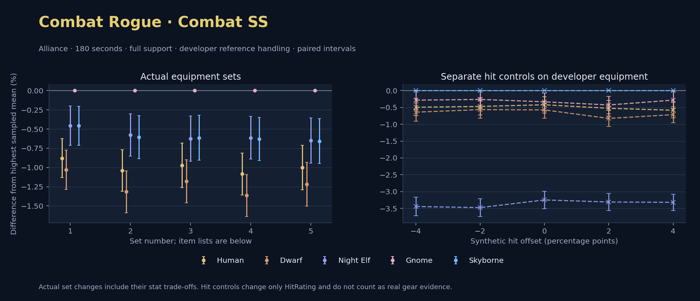

Alliance · Human / Dwarf / Night Elf / Gnome / Skyborne

No pet or guardian appears in the reference combat metrics. Reference: Human, developer equipment, 180 seconds and full support. Pet choices remain those of the developer build.
WoWSims developer · Slow Main Hand
Unimplemented enchant or active set effects: [{"id": 1676, "pieces": 3, "effects": ["Restores 15 health per 5 sec."]}, {"id": 1676, "pieces": 5, "effects": ["When struck in combat, has a 5% chance to remove a Snare effect from yourself. Can only occur once every 60 sec."]}]
Unmeasured proc rates: [{"source": "set", "id": 1676, "pieces": 4, "kind": "ppm", "origin": "unknown"}, {"source": "enchant", "id": 1900, "name": "Enchant Weapon - Crusader", "kind": "ppm", "origin": "vanilla"}, {"source": "item", "id": 871, "name": "Flurry Axe", "kind": "ppm", "origin": "vanilla"}]
180 seconds, full support and original developer references. Hit below is generic sheet melee / spell hit; school and talent bonuses can be attached directly to spells.
| Race | DPS | Gap and interval | Generic hit | Replay |
|---|---|---|---|---|
| Gnome | 706.26 | +0.000% ± 0.000 | 14.4% / 14.4% | Native input · Website JSON |
| Night Elf | 703.02 | -0.459% ± 0.255 | 14.4% / 14.4% | Native input · Website JSON |
| Skyborne | 703.02 | -0.459% ± 0.255 | 14.4% / 14.4% | Native input · Website JSON |
| Human | 700.05 | -0.879% ± 0.253 | 14.4% / 14.4% | Native input · Website JSON |
| Dwarf | 698.98 | -1.030% ± 0.257 | 15.4% / 15.4% | Native input · Website JSON |
| Slot | Item | ID | Enchant |
|---|---|---|---|
| Head | Darkmantle Cap | 226829 | Lesser Arcane Amalgamation |
| Neck | Beads of Ogre Might | 22150 | |
| Shoulder | Theramore Pauldrons | 271955 | |
| Back | Earthweave Cloak | 21187 | Enchant Cloak - Agility |
| Chest | Darkmantle Tunic | 226825 | Enchant Chest - Living Stats |
| Wrist | Darkmantle Bracers | 226830 | Enchant Bracer - Agility |
| Hands | Darkmantle Grips | 226828 | Enchant Gloves - Greater Agility |
| Waist | Assassin's Waistguard | 272395 | |
| Legs | Darkmantle Pants | 226827 | Lesser Arcane Amalgamation |
| Feet | Darkmantle Footpads | 226831 | Enchant Boots - Minor Speed |
| Ring 1 | Don Julio's Band | 19325 | |
| Ring 2 | Might of Cenarius | 21189 | |
| Trinket 1 | Adaptive Combat Assistant | 272437 | |
| Trinket 2 | Rune of the Guard Captain | 19120 | |
| Main hand | Persuader | 22384 | Enchant Weapon - Crusader |
| Off hand | Flurry Axe | 871 | Enchant Weapon - Agility |
| Ranged / relic | Fahrad's Reloading Repeater | 22347 |
Published ranked alternatives · Published pre-raid
Recorded source replacements: [{"slot": "head", "from": 11735, "to": 252482, "publishedAlternativeRank": 1, "publishedEpDelta": -4.2, "reason": "First published alternative compatible with the current WoWSims database, class, faction and occupied slots."}, {"slot": "back", "from": 13340, "to": 272414, "publishedAlternativeRank": 1, "publishedEpDelta": -15.3, "reason": "First published alternative compatible with the current WoWSims database, class, faction and occupied slots."}, {"slot": "finger2", "from": 9533, "to": 285190, "publishedAlternativeRank": 2, "publishedEpDelta": -2.6, "reason": "First published alternative compatible with the current WoWSims database, class, faction and occupied slots."}, {"slot": "trinket2", "from": 13171, "to": 274759, "publishedAlternativeRank": 1, "publishedEpDelta": -1.3, "reason": "First published alternative compatible with the current WoWSims database, class, faction and occupied slots."}, {"slot": "offhand", "from": 15806, "to": 8190, "publishedAlternativeRank": 1, "publishedEpDelta": -15.7, "reason": "First published alternative compatible with the current WoWSims database, class, faction and occupied slots."}, {"slot": "ranged", "from": 2100, "to": 13023, "publishedAlternativeRank": 1, "publishedEpDelta": -3.6, "reason": "First published alternative compatible with the current WoWSims database, class, faction and occupied slots."}]
Unimplemented enchant or active set effects: [{"id": 143, "pieces": 2, "effects": ["Improves your chance to hit by 2.0%."]}]
Unmeasured proc rates: [{"source": "enchant", "id": 1900, "name": "Enchant Weapon - Crusader", "kind": "ppm", "origin": "vanilla"}, {"source": "item", "id": 8190, "name": "Hanzo Sword", "kind": "ppm", "origin": "vanilla"}, {"source": "enchant", "id": 1900, "name": "Enchant Weapon - Crusader", "kind": "ppm", "origin": "vanilla"}]
180 seconds, full support and original developer references. Hit below is generic sheet melee / spell hit; school and talent bonuses can be attached directly to spells.
| Race | DPS | Gap and interval | Generic hit | Replay |
|---|---|---|---|---|
| Gnome | 639.26 | +0.000% ± 0.000 | 9.5% / 9.5% | Native input · Website JSON |
| Night Elf | 635.57 | -0.578% ± 0.275 | 9.5% / 9.5% | Native input · Website JSON |
| Skyborne | 635.39 | -0.606% ± 0.281 | 9.5% / 9.5% | Native input · Website JSON |
| Human | 632.62 | -1.039% ± 0.272 | 9.5% / 9.5% | Native input · Website JSON |
| Dwarf | 630.84 | -1.317% ± 0.273 | 10.5% / 10.5% | Native input · Website JSON |
| Slot | Item | ID | Enchant |
|---|---|---|---|
| Head | Blue Suede Hat | 252482 | Lesser Arcane Amalgamation |
| Neck | Skibi's Pendant | 13089 | Enchant Necklace - Agility |
| Shoulder | Shadowcraft Spaulders | 16708 | |
| Back | Howler's Furs | 272414 | Enchant Cloak - Agility |
| Chest | Dawn Armor | 252483 | Enchant Chest - Greater Stats |
| Wrist | Shadowcraft Bracers | 16710 | Enchant Bracer - Agility |
| Hands | Devilsaur Gauntlets | 15063 | Enchant Gloves - Greater Agility |
| Waist | Assassin's Waistguard | 272395 | |
| Legs | Devilsaur Leggings | 15062 | Lesser Arcane Amalgamation |
| Feet | Shadowcraft Boots | 16711 | Enchant Boots - Greater Agility |
| Ring 1 | Cutthroat's Signet | 272408 | |
| Ring 2 | Wyvern Heart Band | 285190 | |
| Trinket 1 | Adaptive Combat Assistant | 272437 | |
| Trinket 2 | Everlook Pathcarver | 274759 | |
| Main hand | Persuader | 22384 | Enchant Weapon - Crusader |
| Off hand | Hanzo Sword | 8190 | Enchant Weapon - Crusader |
| Ranged / relic | Eaglehorn Long Bow | 13023 |
Published one-slot hit alternative · Published pre-raid
One source-listed alternative; at least 80% of the source slot score retained. Reported hit selects the contrast; only native stats determine simulation outcomes. This is an experimental combination, not an endorsed best set.
Recorded source replacements: [{"slot": "head", "from": 11735, "to": 252482, "publishedAlternativeRank": 1, "publishedEpDelta": -4.2, "reason": "First published alternative compatible with the current WoWSims database, class, faction and occupied slots."}, {"slot": "back", "from": 13340, "to": 272414, "publishedAlternativeRank": 1, "publishedEpDelta": -15.3, "reason": "First published alternative compatible with the current WoWSims database, class, faction and occupied slots."}, {"slot": "finger2", "from": 9533, "to": 285190, "publishedAlternativeRank": 2, "publishedEpDelta": -2.6, "reason": "First published alternative compatible with the current WoWSims database, class, faction and occupied slots."}, {"slot": "trinket2", "from": 13171, "to": 274759, "publishedAlternativeRank": 1, "publishedEpDelta": -1.3, "reason": "First published alternative compatible with the current WoWSims database, class, faction and occupied slots."}, {"slot": "offhand", "from": 15806, "to": 8190, "publishedAlternativeRank": 1, "publishedEpDelta": -15.7, "reason": "First published alternative compatible with the current WoWSims database, class, faction and occupied slots."}, {"slot": "ranged", "from": 2100, "to": 13023, "publishedAlternativeRank": 1, "publishedEpDelta": -3.6, "reason": "First published alternative compatible with the current WoWSims database, class, faction and occupied slots."}]
Unimplemented enchant or active set effects: [{"id": 143, "pieces": 2, "effects": ["Improves your chance to hit by 2.0%."]}]
Unmeasured proc rates: [{"source": "enchant", "id": 1900, "name": "Enchant Weapon - Crusader", "kind": "ppm", "origin": "vanilla"}, {"source": "item", "id": 8190, "name": "Hanzo Sword", "kind": "ppm", "origin": "vanilla"}, {"source": "enchant", "id": 1900, "name": "Enchant Weapon - Crusader", "kind": "ppm", "origin": "vanilla"}]
180 seconds, full support and original developer references. Hit below is generic sheet melee / spell hit; school and talent bonuses can be attached directly to spells.
| Race | DPS | Gap and interval | Generic hit | Replay |
|---|---|---|---|---|
| Gnome | 630.05 | +0.000% ± 0.000 | 7.5% / 7.5% | Native input · Website JSON |
| Skyborne | 626.19 | -0.613% ± 0.290 | 7.5% / 7.5% | Native input · Website JSON |
| Night Elf | 626.12 | -0.624% ± 0.294 | 7.5% / 7.5% | Native input · Website JSON |
| Human | 623.94 | -0.970% ± 0.289 | 7.5% / 7.5% | Native input · Website JSON |
| Dwarf | 622.62 | -1.179% ± 0.281 | 8.5% / 8.5% | Native input · Website JSON |
| Slot | Item | ID | Enchant |
|---|---|---|---|
| Head | Blue Suede Hat | 252482 | Lesser Arcane Amalgamation |
| Neck | Skibi's Pendant | 13089 | Enchant Necklace - Agility |
| Shoulder | Shadowcraft Spaulders | 16708 | |
| Back | Howler's Furs | 272414 | Enchant Cloak - Agility |
| Chest | Dawn Armor | 252483 | Enchant Chest - Greater Stats |
| Wrist | Shadowcraft Bracers | 16710 | Enchant Bracer - Agility |
| Hands | Devilsaur Gauntlets | 15063 | Enchant Gloves - Greater Agility |
| Waist | Might of the Timbermaw | 19044 | |
| Legs | Devilsaur Leggings | 15062 | Lesser Arcane Amalgamation |
| Feet | Shadowcraft Boots | 16711 | Enchant Boots - Greater Agility |
| Ring 1 | Cutthroat's Signet | 272408 | |
| Ring 2 | Wyvern Heart Band | 285190 | |
| Trinket 1 | Adaptive Combat Assistant | 272437 | |
| Trinket 2 | Everlook Pathcarver | 274759 | |
| Main hand | Persuader | 22384 | Enchant Weapon - Crusader |
| Off hand | Hanzo Sword | 8190 | Enchant Weapon - Crusader |
| Ranged / relic | Eaglehorn Long Bow | 13023 |
Published ranked alternatives · Published pre-raid
Recorded source replacements: [{"slot": "head", "from": 11735, "to": 252482, "publishedAlternativeRank": 1, "publishedEpDelta": -4.2, "reason": "First published alternative compatible with the current WoWSims database, class, faction and occupied slots."}, {"slot": "back", "from": 13340, "to": 272414, "publishedAlternativeRank": 1, "publishedEpDelta": -15.3, "reason": "First published alternative compatible with the current WoWSims database, class, faction and occupied slots."}, {"slot": "waist", "from": 227805, "to": 272395, "publishedAlternativeRank": 1, "publishedEpDelta": -8.7, "reason": "First published alternative compatible with the current WoWSims database, class, faction and occupied slots."}, {"slot": "finger2", "from": 9533, "to": 285190, "publishedAlternativeRank": 2, "publishedEpDelta": -2.6, "reason": "First published alternative compatible with the current WoWSims database, class, faction and occupied slots."}, {"slot": "offhand", "from": 15806, "to": 8190, "publishedAlternativeRank": 1, "publishedEpDelta": -15.7, "reason": "First published alternative compatible with the current WoWSims database, class, faction and occupied slots."}, {"slot": "ranged", "from": 2100, "to": 13023, "publishedAlternativeRank": 1, "publishedEpDelta": -3.6, "reason": "First published alternative compatible with the current WoWSims database, class, faction and occupied slots."}]
Unimplemented enchant or active set effects: [{"id": 143, "pieces": 2, "effects": ["Improves your chance to hit by 2.0%."]}]
Unmeasured proc rates: [{"source": "enchant", "id": 1900, "name": "Enchant Weapon - Crusader", "kind": "ppm", "origin": "vanilla"}, {"source": "item", "id": 8190, "name": "Hanzo Sword", "kind": "ppm", "origin": "vanilla"}, {"source": "enchant", "id": 1900, "name": "Enchant Weapon - Crusader", "kind": "ppm", "origin": "vanilla"}]
180 seconds, full support and original developer references. Hit below is generic sheet melee / spell hit; school and talent bonuses can be attached directly to spells.
| Race | DPS | Gap and interval | Generic hit | Replay |
|---|---|---|---|---|
| Gnome | 641.79 | +0.000% ± 0.000 | 9.5% / 9.5% | Native input · Website JSON |
| Night Elf | 637.85 | -0.614% ± 0.276 | 9.5% / 9.5% | Native input · Website JSON |
| Skyborne | 637.75 | -0.630% ± 0.280 | 9.5% / 9.5% | Native input · Website JSON |
| Human | 634.83 | -1.085% ± 0.273 | 9.5% / 9.5% | Native input · Website JSON |
| Dwarf | 633.04 | -1.364% ± 0.273 | 10.5% / 10.5% | Native input · Website JSON |
| Slot | Item | ID | Enchant |
|---|---|---|---|
| Head | Blue Suede Hat | 252482 | Lesser Arcane Amalgamation |
| Neck | Skibi's Pendant | 13089 | Enchant Necklace - Agility |
| Shoulder | Shadowcraft Spaulders | 16708 | |
| Back | Howler's Furs | 272414 | Enchant Cloak - Agility |
| Chest | Dawn Armor | 252483 | Enchant Chest - Greater Stats |
| Wrist | Shadowcraft Bracers | 16710 | Enchant Bracer - Agility |
| Hands | Devilsaur Gauntlets | 15063 | Enchant Gloves - Greater Agility |
| Waist | Assassin's Waistguard | 272395 | |
| Legs | Devilsaur Leggings | 15062 | Lesser Arcane Amalgamation |
| Feet | Shadowcraft Boots | 16711 | Enchant Boots - Greater Agility |
| Ring 1 | Cutthroat's Signet | 272408 | |
| Ring 2 | Wyvern Heart Band | 285190 | |
| Trinket 1 | Adaptive Combat Assistant | 272437 | |
| Trinket 2 | Molten Heart of the Mountain | 249470 | |
| Main hand | Persuader | 22384 | Enchant Weapon - Crusader |
| Off hand | Hanzo Sword | 8190 | Enchant Weapon - Crusader |
| Ranged / relic | Eaglehorn Long Bow | 13023 |
Published one-slot hit alternative · Published pre-raid
One source-listed alternative; at least 80% of the source slot score retained. Reported hit selects the contrast; only native stats determine simulation outcomes. This is an experimental combination, not an endorsed best set.
Recorded source replacements: [{"slot": "head", "from": 11735, "to": 252482, "publishedAlternativeRank": 1, "publishedEpDelta": -4.2, "reason": "First published alternative compatible with the current WoWSims database, class, faction and occupied slots."}, {"slot": "back", "from": 13340, "to": 272414, "publishedAlternativeRank": 1, "publishedEpDelta": -15.3, "reason": "First published alternative compatible with the current WoWSims database, class, faction and occupied slots."}, {"slot": "waist", "from": 227805, "to": 272395, "publishedAlternativeRank": 1, "publishedEpDelta": -8.7, "reason": "First published alternative compatible with the current WoWSims database, class, faction and occupied slots."}, {"slot": "finger2", "from": 9533, "to": 285190, "publishedAlternativeRank": 2, "publishedEpDelta": -2.6, "reason": "First published alternative compatible with the current WoWSims database, class, faction and occupied slots."}, {"slot": "offhand", "from": 15806, "to": 8190, "publishedAlternativeRank": 1, "publishedEpDelta": -15.7, "reason": "First published alternative compatible with the current WoWSims database, class, faction and occupied slots."}, {"slot": "ranged", "from": 2100, "to": 13023, "publishedAlternativeRank": 1, "publishedEpDelta": -3.6, "reason": "First published alternative compatible with the current WoWSims database, class, faction and occupied slots."}]
Unimplemented enchant or active set effects: [{"id": 143, "pieces": 2, "effects": ["Improves your chance to hit by 2.0%."]}]
Unmeasured proc rates: [{"source": "enchant", "id": 1900, "name": "Enchant Weapon - Crusader", "kind": "ppm", "origin": "vanilla"}, {"source": "item", "id": 8190, "name": "Hanzo Sword", "kind": "ppm", "origin": "vanilla"}, {"source": "enchant", "id": 1900, "name": "Enchant Weapon - Crusader", "kind": "ppm", "origin": "vanilla"}]
180 seconds, full support and original developer references. Hit below is generic sheet melee / spell hit; school and talent bonuses can be attached directly to spells.
| Race | DPS | Gap and interval | Generic hit | Replay |
|---|---|---|---|---|
| Gnome | 632.52 | +0.000% ± 0.000 | 7.5% / 7.5% | Native input · Website JSON |
| Night Elf | 628.42 | -0.649% ± 0.295 | 7.5% / 7.5% | Native input · Website JSON |
| Skyborne | 628.37 | -0.657% ± 0.292 | 7.5% / 7.5% | Native input · Website JSON |
| Human | 626.19 | -1.002% ± 0.290 | 7.5% / 7.5% | Native input · Website JSON |
| Dwarf | 624.81 | -1.219% ± 0.283 | 8.5% / 8.5% | Native input · Website JSON |
| Slot | Item | ID | Enchant |
|---|---|---|---|
| Head | Blue Suede Hat | 252482 | Lesser Arcane Amalgamation |
| Neck | Skibi's Pendant | 13089 | Enchant Necklace - Agility |
| Shoulder | Shadowcraft Spaulders | 16708 | |
| Back | Howler's Furs | 272414 | Enchant Cloak - Agility |
| Chest | Dawn Armor | 252483 | Enchant Chest - Greater Stats |
| Wrist | Shadowcraft Bracers | 16710 | Enchant Bracer - Agility |
| Hands | Devilsaur Gauntlets | 15063 | Enchant Gloves - Greater Agility |
| Waist | Might of the Timbermaw | 19044 | |
| Legs | Devilsaur Leggings | 15062 | Lesser Arcane Amalgamation |
| Feet | Shadowcraft Boots | 16711 | Enchant Boots - Greater Agility |
| Ring 1 | Cutthroat's Signet | 272408 | |
| Ring 2 | Wyvern Heart Band | 285190 | |
| Trinket 1 | Adaptive Combat Assistant | 272437 | |
| Trinket 2 | Molten Heart of the Mountain | 249470 | |
| Main hand | Persuader | 22384 | Enchant Weapon - Crusader |
| Off hand | Hanzo Sword | 8190 | Enchant Weapon - Crusader |
| Ranged / relic | Eaglehorn Long Bow | 13023 |
The same declared pool is available to every race. Each race keeps its best validation-sample set with its screening-selected racial policy. Separate samples confirm that choice, with fresh precision samples near the practical-loss boundary. Gaps use the highest sampled mean under that same duration, support and reference treatment as their reference. A zero reference gap does not certify a race; the main matrix also allows uncertainty in the leader.
| Pool | Seconds | Support | References | Race | DPS | Gap and interval | Racial policies / mana | Selected set | Generic hit: melee / spell | Replay |
|---|---|---|---|---|---|---|---|---|---|---|
| published-pre-raid | 60 | full | developer | Gnome | 754.00 | +0.000% ± 0.00020,000 iterations | developer / developer / developerMana waits 0.0s | published-rogue-combat-alliance-3b0994a5e2046fa9 | 9.5% / 9.5% | Input · Result · Stats |
| published-pre-raid | 60 | full | developer | Night Elf | 753.11 | -0.119% ± 0.10820,000 iterations | developer / developer / developerMana waits 0.0s | published-rogue-combat-alliance-862e6fcbc1ec570c | 9.5% / 9.5% | Input · Result · Stats |
| published-pre-raid | 60 | full | developer | Skyborne | 740.50 | -1.791% ± 0.10320,000 iterations | developer / developer / developerMana waits 0.0s | published-rogue-combat-alliance-862e6fcbc1ec570c | 9.5% / 9.5% | Input · Result · Stats |
| published-pre-raid | 60 | full | developer | Human | 736.99 | -2.257% ± 0.10420,000 iterations | developer / developer / developerMana waits 0.0s | published-rogue-combat-alliance-862e6fcbc1ec570c | 9.5% / 9.5% | Input · Result · Stats |
| published-pre-raid | 60 | full | developer | Dwarf | 735.06 | -2.512% ± 0.10420,000 iterations | developer / developer / developerMana waits 0.0s | published-rogue-combat-alliance-862e6fcbc1ec570c | 10.5% / 10.5% | Input · Result · Stats |
| published-pre-raid | 60 | full | explicit | Night Elf | 726.91 | +0.000% ± 0.00020,000 iterations | developer / developer / developerMana waits 0.0s | published-rogue-combat-alliance-862e6fcbc1ec570c | 9.5% / 9.5% | Input · Result · Stats |
| published-pre-raid | 60 | full | explicit | Gnome | 726.53 | -0.052% ± 0.10820,000 iterations | developer / developer / developerMana waits 0.0s | published-rogue-combat-alliance-862e6fcbc1ec570c | 9.5% / 9.5% | Input · Result · Stats |
| published-pre-raid | 60 | full | explicit | Skyborne | 714.81 | -1.665% ± 0.09120,000 iterations | developer / developer / developerMana waits 0.0s | published-rogue-combat-alliance-862e6fcbc1ec570c | 9.5% / 9.5% | Input · Result · Stats |
| published-pre-raid | 60 | full | explicit | Human | 711.42 | -2.131% ± 0.05520,000 iterations | developer / developer / developerMana waits 0.0s | published-rogue-combat-alliance-862e6fcbc1ec570c | 9.5% / 9.5% | Input · Result · Stats |
| published-pre-raid | 60 | full | explicit | Dwarf | 709.30 | -2.423% ± 0.06320,000 iterations | developer / developer / developerMana waits 0.0s | published-rogue-combat-alliance-862e6fcbc1ec570c | 10.5% / 10.5% | Input · Result · Stats |
| published-pre-raid | 60 | self | developer | Night Elf | 386.69 | +0.000% ± 0.00020,000 iterations | developer / developer / developerMana waits 0.0s | published-rogue-combat-alliance-862e6fcbc1ec570c | 9.5% / 9.5% | Input · Result · Stats |
| published-pre-raid | 60 | self | developer | Gnome | 384.04 | -0.684% ± 0.10320,000 iterations | developer / developer / developerMana waits 0.0s | published-rogue-combat-alliance-862e6fcbc1ec570c | 9.5% / 9.5% | Input · Result · Stats |
| published-pre-raid | 60 | self | developer | Skyborne | 379.49 | -1.862% ± 0.08220,000 iterations | developer / developer / developerMana waits 0.0s | published-rogue-combat-alliance-862e6fcbc1ec570c | 9.5% / 9.5% | Input · Result · Stats |
| published-pre-raid | 60 | self | developer | Human | 378.50 | -2.117% ± 0.04020,000 iterations | developer / developer / developerMana waits 0.0s | published-rogue-combat-alliance-862e6fcbc1ec570c | 9.5% / 9.5% | Input · Result · Stats |
| published-pre-raid | 60 | self | developer | Dwarf | 377.06 | -2.489% ± 0.04820,000 iterations | developer / developer / developerMana waits 0.0s | published-rogue-combat-alliance-862e6fcbc1ec570c | 10.5% / 10.5% | Input · Result · Stats |
| published-pre-raid | 60 | self | explicit | Night Elf | 368.92 | +0.000% ± 0.00020,000 iterations | developer / developer / developerMana waits 0.0s | published-rogue-combat-alliance-862e6fcbc1ec570c | 9.5% / 9.5% | Input · Result · Stats |
| published-pre-raid | 60 | self | explicit | Gnome | 367.14 | -0.481% ± 0.10320,000 iterations | developer / developer / developerMana waits 0.0s | published-rogue-combat-alliance-862e6fcbc1ec570c | 9.5% / 9.5% | Input · Result · Stats |
| published-pre-raid | 60 | self | explicit | Skyborne | 362.04 | -1.864% ± 0.08420,000 iterations | developer / developer / developerMana waits 0.0s | published-rogue-combat-alliance-862e6fcbc1ec570c | 9.5% / 9.5% | Input · Result · Stats |
| published-pre-raid | 60 | self | explicit | Human | 361.19 | -2.096% ± 0.05120,000 iterations | developer / developer / developerMana waits 0.0s | published-rogue-combat-alliance-862e6fcbc1ec570c | 9.5% / 9.5% | Input · Result · Stats |
| published-pre-raid | 60 | self | explicit | Dwarf | 359.58 | -2.530% ± 0.05620,000 iterations | developer / developer / developerMana waits 0.0s | published-rogue-combat-alliance-862e6fcbc1ec570c | 10.5% / 10.5% | Input · Result · Stats |
| published-pre-raid | 180 | full | developer | Gnome | 640.05 | +0.000% ± 0.0005,000 iterations | developer / developer / developerMana waits 0.0s | published-rogue-combat-alliance-3b0994a5e2046fa9 | 9.5% / 9.5% | Input · Result · Stats · Website JSON |
| published-pre-raid | 180 | full | developer | Night Elf | 636.91 | -0.490% ± 0.1275,000 iterations | developer / developer / developerMana waits 0.0s | published-rogue-combat-alliance-3b0994a5e2046fa9 | 9.5% / 9.5% | Input · Result · Stats · Website JSON |
| published-pre-raid | 180 | full | developer | Skyborne | 636.17 | -0.606% ± 0.1275,000 iterations | developer / developer / developerMana waits 0.0s | published-rogue-combat-alliance-3b0994a5e2046fa9 | 9.5% / 9.5% | Input · Result · Stats · Website JSON |
| published-pre-raid | 180 | full | developer | Human | 633.86 | -0.967% ± 0.1265,000 iterations | developer / developer / developerMana waits 0.0s | published-rogue-combat-alliance-3b0994a5e2046fa9 | 9.5% / 9.5% | Input · Result · Stats · Website JSON |
| published-pre-raid | 180 | full | developer | Dwarf | 631.95 | -1.265% ± 0.1255,000 iterations | developer / developer / developerMana waits 0.0s | published-rogue-combat-alliance-3b0994a5e2046fa9 | 10.5% / 10.5% | Input · Result · Stats · Website JSON |
| published-pre-raid | 180 | full | explicit | Gnome | 627.83 | +0.000% ± 0.0005,000 iterations | developer / developer / developerMana waits 0.0s | published-rogue-combat-alliance-3b0994a5e2046fa9 | 9.5% / 9.5% | Input · Result · Stats |
| published-pre-raid | 180 | full | explicit | Night Elf | 625.14 | -0.430% ± 0.1275,000 iterations | developer / developer / developerMana waits 0.0s | published-rogue-combat-alliance-3b0994a5e2046fa9 | 9.5% / 9.5% | Input · Result · Stats |
| published-pre-raid | 180 | full | explicit | Skyborne | 624.63 | -0.511% ± 0.1275,000 iterations | developer / developer / developerMana waits 0.0s | published-rogue-combat-alliance-3b0994a5e2046fa9 | 9.5% / 9.5% | Input · Result · Stats |
| published-pre-raid | 180 | full | explicit | Human | 622.15 | -0.904% ± 0.1265,000 iterations | developer / developer / developerMana waits 0.0s | published-rogue-combat-alliance-3b0994a5e2046fa9 | 9.5% / 9.5% | Input · Result · Stats |
| published-pre-raid | 180 | full | explicit | Dwarf | 620.19 | -1.217% ± 0.1275,000 iterations | developer / developer / developerMana waits 0.0s | published-rogue-combat-alliance-3b0994a5e2046fa9 | 10.5% / 10.5% | Input · Result · Stats |
| published-pre-raid | 180 | self | developer | Gnome | 319.71 | +0.000% ± 0.0005,000 iterations | developer / developer / developerMana waits 0.0s | published-rogue-combat-alliance-3b0994a5e2046fa9 | 9.5% / 9.5% | Input · Result · Stats |
| published-pre-raid | 180 | self | developer | Night Elf | 317.60 | -0.661% ± 0.1245,000 iterations | developer / developer / developerMana waits 0.0s | published-rogue-combat-alliance-3b0994a5e2046fa9 | 9.5% / 9.5% | Input · Result · Stats |
| published-pre-raid | 180 | self | developer | Skyborne | 317.00 | -0.848% ± 0.1225,000 iterations | developer / developer / developerMana waits 0.0s | published-rogue-combat-alliance-3b0994a5e2046fa9 | 9.5% / 9.5% | Input · Result · Stats |
| published-pre-raid | 180 | self | developer | Human | 316.11 | -1.126% ± 0.1225,000 iterations | developer / developer / developerMana waits 0.0s | published-rogue-combat-alliance-3b0994a5e2046fa9 | 9.5% / 9.5% | Input · Result · Stats |
| published-pre-raid | 180 | self | developer | Dwarf | 315.08 | -1.451% ± 0.1225,000 iterations | developer / developer / developerMana waits 0.0s | published-rogue-combat-alliance-3b0994a5e2046fa9 | 10.5% / 10.5% | Input · Result · Stats |
| published-pre-raid | 180 | self | explicit | Gnome | 311.47 | +0.000% ± 0.0005,000 iterations | developer / developer / developerMana waits 0.0s | published-rogue-combat-alliance-3b0994a5e2046fa9 | 9.5% / 9.5% | Input · Result · Stats |
| published-pre-raid | 180 | self | explicit | Night Elf | 309.78 | -0.543% ± 0.1235,000 iterations | developer / developer / developerMana waits 0.0s | published-rogue-combat-alliance-3b0994a5e2046fa9 | 9.5% / 9.5% | Input · Result · Stats |
| published-pre-raid | 180 | self | explicit | Skyborne | 309.26 | -0.711% ± 0.1215,000 iterations | developer / developer / developerMana waits 0.0s | published-rogue-combat-alliance-3b0994a5e2046fa9 | 9.5% / 9.5% | Input · Result · Stats |
| published-pre-raid | 180 | self | explicit | Human | 308.41 | -0.983% ± 0.1225,000 iterations | developer / developer / developerMana waits 0.0s | published-rogue-combat-alliance-3b0994a5e2046fa9 | 9.5% / 9.5% | Input · Result · Stats |
| published-pre-raid | 180 | self | explicit | Dwarf | 307.37 | -1.318% ± 0.1235,000 iterations | developer / developer / developerMana waits 0.0s | published-rogue-combat-alliance-3b0994a5e2046fa9 | 10.5% / 10.5% | Input · Result · Stats |
| published-pre-raid | 300 | full | developer | Gnome | 618.98 | +0.000% ± 0.00020,000 iterations | developer / developer / developerMana waits 0.0s | published-rogue-combat-alliance-3b0994a5e2046fa9 | 9.5% / 9.5% | Input · Result · Stats |
| published-pre-raid | 300 | full | developer | Night Elf | 618.48 | -0.082% ± 0.05120,000 iterations | developer / developer / developerMana waits 0.0s | published-rogue-combat-alliance-3b0994a5e2046fa9 | 9.5% / 9.5% | Input · Result · Stats |
| published-pre-raid | 300 | full | developer | Skyborne | 617.43 | -0.250% ± 0.04920,000 iterations | developer / developer / developerMana waits 0.0s | published-rogue-combat-alliance-3b0994a5e2046fa9 | 9.5% / 9.5% | Input · Result · Stats |
| published-pre-raid | 300 | full | developer | Human | 615.46 | -0.569% ± 0.05020,000 iterations | developer / developer / developerMana waits 0.0s | published-rogue-combat-alliance-3b0994a5e2046fa9 | 9.5% / 9.5% | Input · Result · Stats |
| published-pre-raid | 300 | full | developer | Dwarf | 614.03 | -0.800% ± 0.05020,000 iterations | developer / developer / developerMana waits 0.0s | published-rogue-combat-alliance-3b0994a5e2046fa9 | 10.5% / 10.5% | Input · Result · Stats |
| published-pre-raid | 300 | full | explicit | Gnome | 607.74 | +0.000% ± 0.00020,000 iterations | developer / developer / developerMana waits 0.0s | published-rogue-combat-alliance-3b0994a5e2046fa9 | 9.5% / 9.5% | Input · Result · Stats |
| published-pre-raid | 300 | full | explicit | Night Elf | 606.94 | -0.132% ± 0.05120,000 iterations | developer / developer / developerMana waits 0.0s | published-rogue-combat-alliance-3b0994a5e2046fa9 | 9.5% / 9.5% | Input · Result · Stats |
| published-pre-raid | 300 | full | explicit | Skyborne | 605.81 | -0.318% ± 0.05020,000 iterations | developer / developer / developerMana waits 0.0s | published-rogue-combat-alliance-3b0994a5e2046fa9 | 9.5% / 9.5% | Input · Result · Stats |
| published-pre-raid | 300 | full | explicit | Human | 603.97 | -0.621% ± 0.05020,000 iterations | developer / developer / developerMana waits 0.0s | published-rogue-combat-alliance-3b0994a5e2046fa9 | 9.5% / 9.5% | Input · Result · Stats |
| published-pre-raid | 300 | full | explicit | Dwarf | 602.61 | -0.845% ± 0.05020,000 iterations | developer / developer / developerMana waits 0.0s | published-rogue-combat-alliance-3b0994a5e2046fa9 | 10.5% / 10.5% | Input · Result · Stats |
| published-pre-raid | 300 | self | developer | Gnome | 307.76 | +0.000% ± 0.00020,000 iterations | developer / developer / developerMana waits 0.0s | published-rogue-combat-alliance-3b0994a5e2046fa9 | 9.5% / 9.5% | Input · Result · Stats |
| published-pre-raid | 300 | self | developer | Night Elf | 307.17 | -0.191% ± 0.04820,000 iterations | developer / developer / developerMana waits 0.0s | published-rogue-combat-alliance-3b0994a5e2046fa9 | 9.5% / 9.5% | Input · Result · Stats |
| published-pre-raid | 300 | self | developer | Skyborne | 306.33 | -0.466% ± 0.04720,000 iterations | developer / developer / developerMana waits 0.0s | published-rogue-combat-alliance-3b0994a5e2046fa9 | 9.5% / 9.5% | Input · Result · Stats |
| published-pre-raid | 300 | self | developer | Human | 305.75 | -0.655% ± 0.04820,000 iterations | developer / developer / developerMana waits 0.0s | published-rogue-combat-alliance-3b0994a5e2046fa9 | 9.5% / 9.5% | Input · Result · Stats |
| published-pre-raid | 300 | self | developer | Dwarf | 304.83 | -0.952% ± 0.04720,000 iterations | developer / developer / developerMana waits 0.0s | published-rogue-combat-alliance-3b0994a5e2046fa9 | 10.5% / 10.5% | Input · Result · Stats |
| published-pre-raid | 300 | self | explicit | Gnome | 300.17 | +0.000% ± 0.00020,000 iterations | developer / developer / developerMana waits 0.0s | published-rogue-combat-alliance-3b0994a5e2046fa9 | 9.5% / 9.5% | Input · Result · Stats |
| published-pre-raid | 300 | self | explicit | Night Elf | 299.47 | -0.234% ± 0.04920,000 iterations | developer / developer / developerMana waits 0.0s | published-rogue-combat-alliance-3b0994a5e2046fa9 | 9.5% / 9.5% | Input · Result · Stats |
| published-pre-raid | 300 | self | explicit | Skyborne | 298.58 | -0.529% ± 0.04820,000 iterations | developer / developer / developerMana waits 0.0s | published-rogue-combat-alliance-3b0994a5e2046fa9 | 9.5% / 9.5% | Input · Result · Stats |
| published-pre-raid | 300 | self | explicit | Human | 298.12 | -0.681% ± 0.04820,000 iterations | developer / developer / developerMana waits 0.0s | published-rogue-combat-alliance-3b0994a5e2046fa9 | 9.5% / 9.5% | Input · Result · Stats |
| published-pre-raid | 300 | self | explicit | Dwarf | 297.14 | -1.008% ± 0.04820,000 iterations | developer / developer / developerMana waits 0.0s | published-rogue-combat-alliance-3b0994a5e2046fa9 | 10.5% / 10.5% | Input · Result · Stats |
| developer-reference | 60 | full | developer | Gnome | 820.18 | +0.000% ± 0.00020,000 iterations | developer / developer / developerMana waits 0.0s | developer | 14.4% / 14.4% | Input · Result · Stats |
| developer-reference | 60 | full | developer | Night Elf | 818.45 | -0.211% ± 0.10020,000 iterations | developer / developer / developerMana waits 0.0s | developer | 14.4% / 14.4% | Input · Result · Stats |
| developer-reference | 60 | full | developer | Skyborne | 807.20 | -1.583% ± 0.09520,000 iterations | developer / developer / developerMana waits 0.0s | developer | 14.4% / 14.4% | Input · Result · Stats |
| developer-reference | 60 | full | developer | Human | 802.17 | -2.195% ± 0.09520,000 iterations | developer / developer / developerMana waits 0.0s | developer | 14.4% / 14.4% | Input · Result · Stats |
| developer-reference | 60 | full | developer | Dwarf | 800.33 | -2.421% ± 0.09520,000 iterations | developer / developer / developerMana waits 0.0s | developer | 15.4% / 15.4% | Input · Result · Stats |
| developer-reference | 60 | full | explicit | Gnome | 792.02 | +0.000% ± 0.00020,000 iterations | developer / developer / developerMana waits 0.0s | developer | 14.4% / 14.4% | Input · Result · Stats |
| developer-reference | 60 | full | explicit | Night Elf | 791.28 | -0.094% ± 0.10220,000 iterations | developer / developer / developerMana waits 0.0s | developer | 14.4% / 14.4% | Input · Result · Stats |
| developer-reference | 60 | full | explicit | Skyborne | 780.52 | -1.453% ± 0.09620,000 iterations | developer / developer / developerMana waits 0.0s | developer | 14.4% / 14.4% | Input · Result · Stats |
| developer-reference | 60 | full | explicit | Human | 775.71 | -2.059% ± 0.09720,000 iterations | developer / developer / developerMana waits 0.0s | developer | 14.4% / 14.4% | Input · Result · Stats |
| developer-reference | 60 | full | explicit | Dwarf | 773.49 | -2.340% ± 0.09720,000 iterations | developer / developer / developerMana waits 0.0s | developer | 15.4% / 15.4% | Input · Result · Stats |
| developer-reference | 60 | self | developer | Night Elf | 412.99 | +0.000% ± 0.00020,000 iterations | developer / developer / developerMana waits 0.0s | developer | 14.4% / 14.4% | Input · Result · Stats |
| developer-reference | 60 | self | developer | Gnome | 412.54 | -0.110% ± 0.09920,000 iterations | developer / developer / developerMana waits 0.0s | developer | 14.4% / 14.4% | Input · Result · Stats |
| developer-reference | 60 | self | developer | Skyborne | 406.51 | -1.571% ± 0.08020,000 iterations | developer / developer / developerMana waits 0.0s | developer | 14.4% / 14.4% | Input · Result · Stats |
| developer-reference | 60 | self | developer | Human | 404.61 | -2.031% ± 0.04020,000 iterations | developer / developer / developerMana waits 0.0s | developer | 14.4% / 14.4% | Input · Result · Stats |
| developer-reference | 60 | self | developer | Dwarf | 403.23 | -2.365% ± 0.05620,000 iterations | developer / developer / developerMana waits 0.0s | developer | 15.4% / 15.4% | Input · Result · Stats |
| developer-reference | 60 | self | explicit | Night Elf | 394.63 | +0.000% ± 0.00020,000 iterations | developer / developer / developerMana waits 0.0s | developer | 14.4% / 14.4% | Input · Result · Stats |
| developer-reference | 60 | self | explicit | Gnome | 394.12 | -0.129% ± 0.09820,000 iterations | developer / developer / developerMana waits 0.0s | developer | 14.4% / 14.4% | Input · Result · Stats |
| developer-reference | 60 | self | explicit | Skyborne | 388.54 | -1.543% ± 0.08220,000 iterations | developer / developer / developerMana waits 0.0s | developer | 14.4% / 14.4% | Input · Result · Stats |
| developer-reference | 60 | self | explicit | Human | 386.85 | -1.971% ± 0.05620,000 iterations | developer / developer / developerMana waits 0.0s | developer | 14.4% / 14.4% | Input · Result · Stats |
| developer-reference | 60 | self | explicit | Dwarf | 385.24 | -2.380% ± 0.06520,000 iterations | developer / developer / developerMana waits 0.0s | developer | 15.4% / 15.4% | Input · Result · Stats |
| developer-reference | 180 | full | developer | Gnome | 705.82 | +0.000% ± 0.0005,000 iterations | developer / developer / developerMana waits 0.0s | developer | 14.4% / 14.4% | Input · Result · Stats · Website JSON |
| developer-reference | 180 | full | developer | Skyborne | 702.77 | -0.432% ± 0.1155,000 iterations | developer / developer / developerMana waits 0.0s | developer | 14.4% / 14.4% | Input · Result · Stats · Website JSON |
| developer-reference | 180 | full | developer | Night Elf | 702.22 | -0.510% ± 0.1175,000 iterations | developer / developer / developerMana waits 0.0s | developer | 14.4% / 14.4% | Input · Result · Stats · Website JSON |
| developer-reference | 180 | full | developer | Human | 699.41 | -0.908% ± 0.1155,000 iterations | developer / developer / developerMana waits 0.0s | developer | 14.4% / 14.4% | Input · Result · Stats · Website JSON |
| developer-reference | 180 | full | developer | Dwarf | 698.73 | -1.004% ± 0.1165,000 iterations | developer / developer / developerMana waits 0.0s | developer | 15.4% / 15.4% | Input · Result · Stats · Website JSON |
| developer-reference | 180 | full | explicit | Gnome | 693.20 | +0.000% ± 0.0005,000 iterations | developer / developer / developerMana waits 0.0s | developer | 14.4% / 14.4% | Input · Result · Stats |
| developer-reference | 180 | full | explicit | Skyborne | 690.46 | -0.394% ± 0.1145,000 iterations | developer / developer / developerMana waits 0.0s | developer | 14.4% / 14.4% | Input · Result · Stats |
| developer-reference | 180 | full | explicit | Night Elf | 689.67 | -0.508% ± 0.1165,000 iterations | developer / developer / developerMana waits 0.0s | developer | 14.4% / 14.4% | Input · Result · Stats |
| developer-reference | 180 | full | explicit | Human | 687.50 | -0.822% ± 0.1145,000 iterations | developer / developer / developerMana waits 0.0s | developer | 14.4% / 14.4% | Input · Result · Stats |
| developer-reference | 180 | full | explicit | Dwarf | 686.53 | -0.961% ± 0.1155,000 iterations | developer / developer / developerMana waits 0.0s | developer | 15.4% / 15.4% | Input · Result · Stats |
| developer-reference | 180 | self | developer | Gnome | 347.44 | +0.000% ± 0.0005,000 iterations | developer / developer / developerMana waits 0.0s | developer | 14.4% / 14.4% | Input · Result · Stats |
| developer-reference | 180 | self | developer | Night Elf | 345.39 | -0.589% ± 0.1145,000 iterations | developer / developer / developerMana waits 0.0s | developer | 14.4% / 14.4% | Input · Result · Stats |
| developer-reference | 180 | self | developer | Skyborne | 345.22 | -0.638% ± 0.1115,000 iterations | developer / developer / developerMana waits 0.0s | developer | 14.4% / 14.4% | Input · Result · Stats |
| developer-reference | 180 | self | developer | Human | 343.98 | -0.995% ± 0.1125,000 iterations | developer / developer / developerMana waits 0.0s | developer | 14.4% / 14.4% | Input · Result · Stats |
| developer-reference | 180 | self | developer | Dwarf | 342.93 | -1.297% ± 0.1115,000 iterations | developer / developer / developerMana waits 0.0s | developer | 15.4% / 15.4% | Input · Result · Stats |
| developer-reference | 180 | self | explicit | Gnome | 339.01 | +0.000% ± 0.0005,000 iterations | developer / developer / developerMana waits 0.0s | developer | 14.4% / 14.4% | Input · Result · Stats |
| developer-reference | 180 | self | explicit | Night Elf | 337.21 | -0.531% ± 0.1165,000 iterations | developer / developer / developerMana waits 0.0s | developer | 14.4% / 14.4% | Input · Result · Stats |
| developer-reference | 180 | self | explicit | Skyborne | 337.15 | -0.548% ± 0.1125,000 iterations | developer / developer / developerMana waits 0.0s | developer | 14.4% / 14.4% | Input · Result · Stats |
| developer-reference | 180 | self | explicit | Human | 336.08 | -0.864% ± 0.1155,000 iterations | developer / developer / developerMana waits 0.0s | developer | 14.4% / 14.4% | Input · Result · Stats |
| developer-reference | 180 | self | explicit | Dwarf | 335.04 | -1.172% ± 0.1155,000 iterations | developer / developer / developerMana waits 0.0s | developer | 15.4% / 15.4% | Input · Result · Stats |
| developer-reference | 300 | full | developer | Gnome | 685.50 | +0.000% ± 0.00020,000 iterations | developer / developer / developerMana waits 0.0s | developer | 14.4% / 14.4% | Input · Result · Stats |
| developer-reference | 300 | full | developer | Night Elf | 684.73 | -0.112% ± 0.04620,000 iterations | developer / developer / developerMana waits 0.0s | developer | 14.4% / 14.4% | Input · Result · Stats |
| developer-reference | 300 | full | developer | Skyborne | 684.30 | -0.175% ± 0.04520,000 iterations | developer / developer / developerMana waits 0.0s | developer | 14.4% / 14.4% | Input · Result · Stats |
| developer-reference | 300 | full | developer | Human | 681.92 | -0.522% ± 0.04620,000 iterations | developer / developer / developerMana waits 0.0s | developer | 14.4% / 14.4% | Input · Result · Stats |
| developer-reference | 300 | full | developer | Dwarf | 680.64 | -0.709% ± 0.04620,000 iterations | developer / developer / developerMana waits 0.0s | developer | 15.4% / 15.4% | Input · Result · Stats |
| developer-reference | 300 | full | explicit | Gnome | 673.43 | +0.000% ± 0.00020,000 iterations | developer / developer / developerMana waits 0.0s | developer | 14.4% / 14.4% | Input · Result · Stats |
| developer-reference | 300 | full | explicit | Night Elf | 672.47 | -0.143% ± 0.04620,000 iterations | developer / developer / developerMana waits 0.0s | developer | 14.4% / 14.4% | Input · Result · Stats |
| developer-reference | 300 | full | explicit | Skyborne | 672.04 | -0.207% ± 0.04620,000 iterations | developer / developer / developerMana waits 0.0s | developer | 14.4% / 14.4% | Input · Result · Stats |
| developer-reference | 300 | full | explicit | Human | 669.81 | -0.538% ± 0.04620,000 iterations | developer / developer / developerMana waits 0.0s | developer | 14.4% / 14.4% | Input · Result · Stats |
| developer-reference | 300 | full | explicit | Dwarf | 668.42 | -0.745% ± 0.04620,000 iterations | developer / developer / developerMana waits 0.0s | developer | 15.4% / 15.4% | Input · Result · Stats |
| developer-reference | 300 | self | developer | Gnome | 335.90 | +0.000% ± 0.00020,000 iterations | developer / developer / developerMana waits 0.0s | developer | 14.4% / 14.4% | Input · Result · Stats |
| developer-reference | 300 | self | developer | Night Elf | 335.39 | -0.151% ± 0.04420,000 iterations | developer / developer / developerMana waits 0.0s | developer | 14.4% / 14.4% | Input · Result · Stats |
| developer-reference | 300 | self | developer | Skyborne | 334.80 | -0.327% ± 0.04420,000 iterations | developer / developer / developerMana waits 0.0s | developer | 14.4% / 14.4% | Input · Result · Stats |
| developer-reference | 300 | self | developer | Human | 333.96 | -0.576% ± 0.04420,000 iterations | developer / developer / developerMana waits 0.0s | developer | 14.4% / 14.4% | Input · Result · Stats |
| developer-reference | 300 | self | developer | Dwarf | 333.04 | -0.850% ± 0.04420,000 iterations | developer / developer / developerMana waits 0.0s | developer | 15.4% / 15.4% | Input · Result · Stats |
| developer-reference | 300 | self | explicit | Gnome | 327.95 | +0.000% ± 0.00020,000 iterations | developer / developer / developerMana waits 0.0s | developer | 14.4% / 14.4% | Input · Result · Stats |
| developer-reference | 300 | self | explicit | Night Elf | 327.29 | -0.199% ± 0.04520,000 iterations | developer / developer / developerMana waits 0.0s | developer | 14.4% / 14.4% | Input · Result · Stats |
| developer-reference | 300 | self | explicit | Skyborne | 326.72 | -0.374% ± 0.04420,000 iterations | developer / developer / developerMana waits 0.0s | developer | 14.4% / 14.4% | Input · Result · Stats |
| developer-reference | 300 | self | explicit | Human | 325.97 | -0.604% ± 0.04520,000 iterations | developer / developer / developerMana waits 0.0s | developer | 14.4% / 14.4% | Input · Result · Stats |
| developer-reference | 300 | self | explicit | Dwarf | 324.98 | -0.905% ± 0.04420,000 iterations | developer / developer / developerMana waits 0.0s | developer | 15.4% / 15.4% | Input · Result · Stats |
180 seconds, full support and the developer equipment anchor. These checks test creature sensitivity without a full gear search.
| Target | References | Race | DPS | Gap and interval | Replay |
|---|---|---|---|---|---|
| beast | developer | Dwarf | 733.07 | +0.000% ± 0.000 | Input · Result |
| beast | developer | Skyborne | 703.02 | -4.099% ± 0.237 | Input · Result |
| beast | developer | Gnome | 700.67 | -4.419% ± 0.253 | Input · Result |
| beast | developer | Human | 700.05 | -4.504% ± 0.189 | Input · Result |
| beast | developer | Night Elf | 680.17 | -7.216% ± 0.255 | Input · Result |
| beast | explicit | Dwarf | 720.22 | +0.000% ± 0.000 | Input · Result |
| beast | explicit | Skyborne | 690.83 | -4.081% ± 0.240 | Input · Result |
| beast | explicit | Human | 688.39 | -4.420% ± 0.188 | Input · Result |
| beast | explicit | Gnome | 688.21 | -4.445% ± 0.255 | Input · Result |
| beast | explicit | Night Elf | 668.12 | -7.234% ± 0.260 | Input · Result |
| elemental | developer | Skyborne | 737.30 | +0.000% ± 0.000 | Input · Result |
| elemental | developer | Gnome | 700.67 | -4.968% ± 0.245 | Input · Result |
| elemental | developer | Human | 700.05 | -5.052% ± 0.232 | Input · Result |
| elemental | developer | Dwarf | 698.98 | -5.197% ± 0.234 | Input · Result |
| elemental | developer | Night Elf | 680.17 | -7.748% ± 0.246 | Input · Result |
| elemental | explicit | Skyborne | 724.50 | +0.000% ± 0.000 | Input · Result |
| elemental | explicit | Human | 688.39 | -4.985% ± 0.237 | Input · Result |
| elemental | explicit | Gnome | 688.21 | -5.010% ± 0.250 | Input · Result |
| elemental | explicit | Dwarf | 686.74 | -5.211% ± 0.237 | Input · Result |
| elemental | explicit | Night Elf | 668.12 | -7.782% ± 0.254 | Input · Result |
Some equipment has unimplemented enchant or set effects; Some equipment uses unmeasured proc rates; Sensitive to unavailable rotation references
The APL is in constant flux due to bug fixes and new findings; if your DPS drops dramatically, reset it back to "Auto" in the Rotation tab!; Mutilate does not have a default APL currently. It will not be automatically used when talented.
These known-issue notes are source context. Runtime checks establish current cast coverage, including Mutilate. They do not prove every mechanic matches the game.